Overview
The BayesIRTplot package can be used to generate plots
for Bayesian item response theory (IRT) models fitted in
blavaan. BayesIRTplot() reads in a fitted IRT
model from blavaan. The current version supports
unidimensional two-parameter IRT models for binary items. The following
types of plots are available: Item-Person Map (IPM), Item Characteristic
Curve (ICC), Item Information Curve (IIC), Test Characteristic Curve
(TCC), Test Information Curve (TIC), and Marginal Reliability Plot
(REL). This vignette provides examples for use of the
BayesIRTPlot package.
A fitted blavaan object
(tma.IRT.fitted.model) is included in the package and it is
used throughout the examples. Details on data source, data preparation
and model fitting are provided at the end.
# attach the package
library(BayesIRTplot)
# load the example blavaan fitted model
data("tma.IRT.fitted.model")Item-Person Map
IPM shows the box plots of each item’s threshold () parameter, summarizing across all posterior draws using Q1, Q3, median, and the lower and upper whiskers (calculated as Q1 − 1.5 × IQR and Q3 + 1.5 × IQR, respectively).
BayesIRTplot(tma.IRT.fitted.model, IRTplot = "IPM") 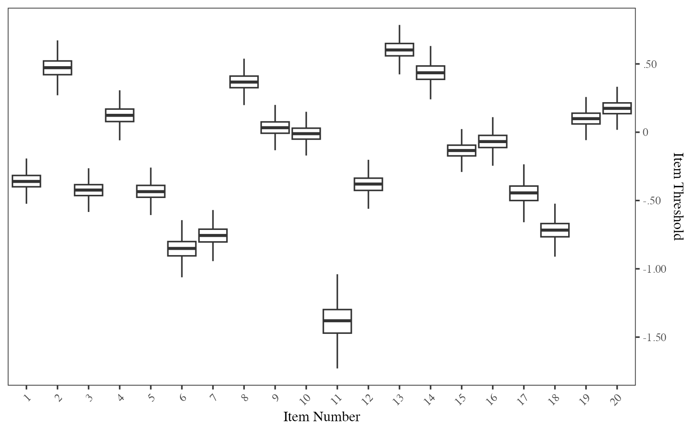
Item Characteristic Curve
In ICC, each grey line shows the probabilities of a correct response in one posterior draw, while the black line shows the mean across all posterior draws.
ICC is plotted over a latent trait () range of -6 to 6. The same range is used for IIC, TCC, and TIC plots.
By default, all items will be plotted. We can specify a few items by providing a list of item numbers with item names (optional). ICC can be generated as separate plots for each item, several items in a panel, or several items overlaid in one plot.
# ICC for 3 items, with item names
BayesIRTplot(tma.IRT.fitted.model, IRTplot = "ICC", items_ICC_IIC = c(1, 4, 6),
item_names_ICC_IIC = c("ItemName1", "ItemName2", "ItemName3"))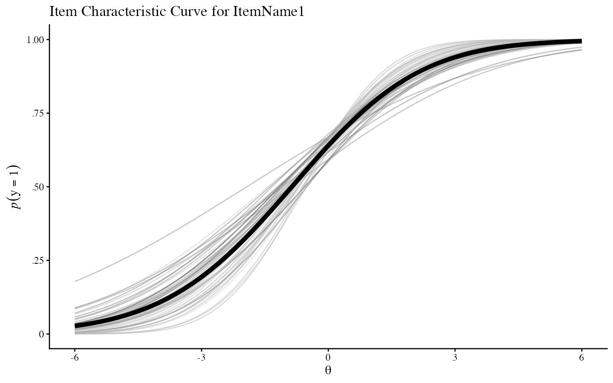
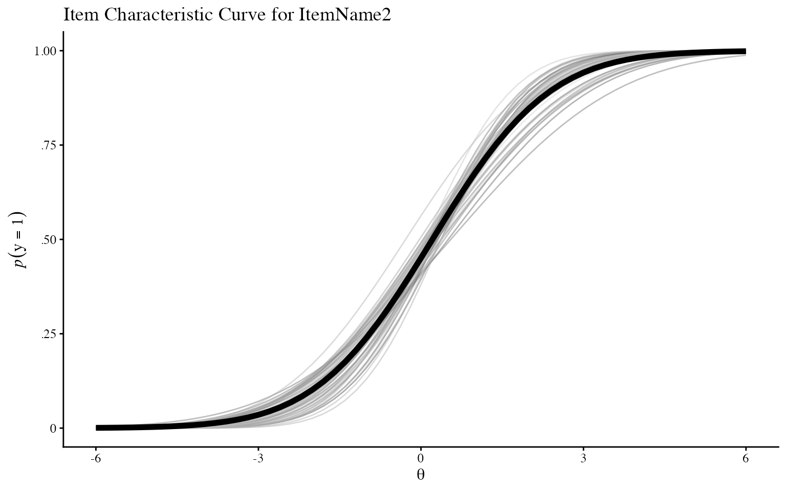
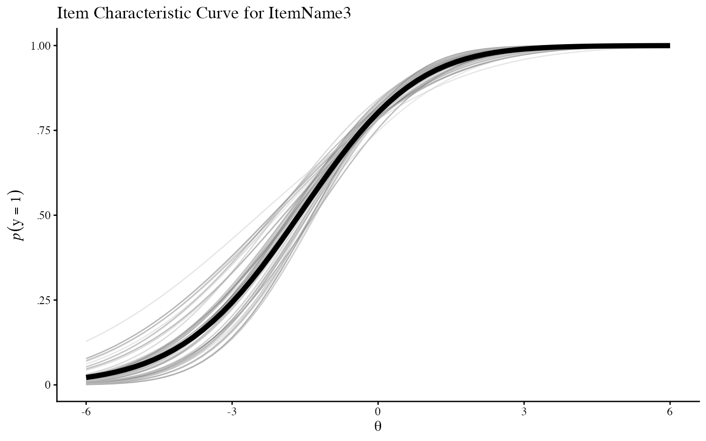
# panel ICC
# specify a maximum of 4 items and 2 columns in a panel
BayesIRTplot(tma.IRT.fitted.model, IRTplot = "ICC", items_ICC_IIC = c(1:8),
plot_option_ICC_IIC = "panel", max_plots_panel = 4, ncol_panel = 2) 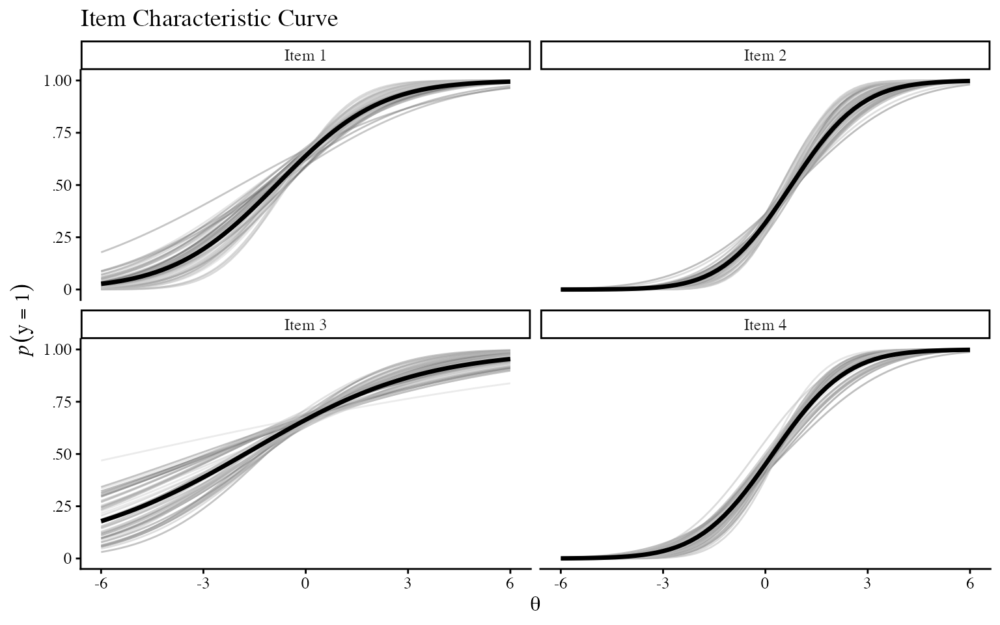
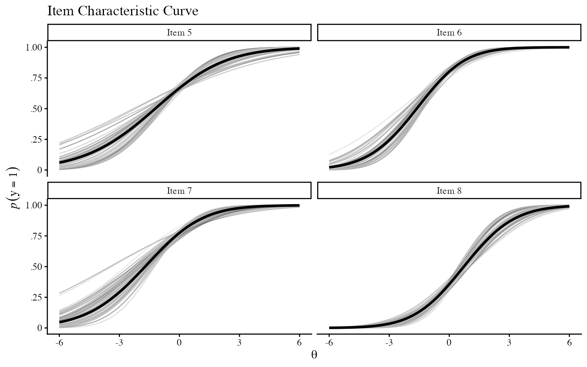
# overlaid ICC
BayesIRTplot(tma.IRT.fitted.model, IRTplot = "ICC", items_ICC_IIC = c(1,2,3),
plot_option_ICC_IIC = "overlay") 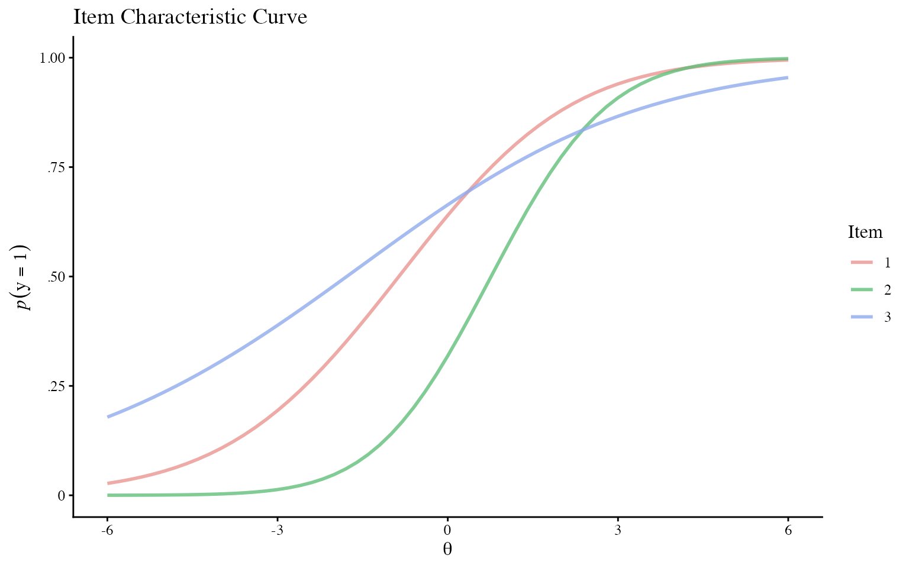
# overlaid ICC by line types (instead of colors) for different items
BayesIRTplot(tma.IRT.fitted.model, IRTplot = "ICC", items_ICC_IIC = c(1,2,3),
item_names_ICC_IIC = c("ItemName1", "ItemName2", "ItemName3"),
plot_option_ICC_IIC = "overlay", overlay_style = "line") 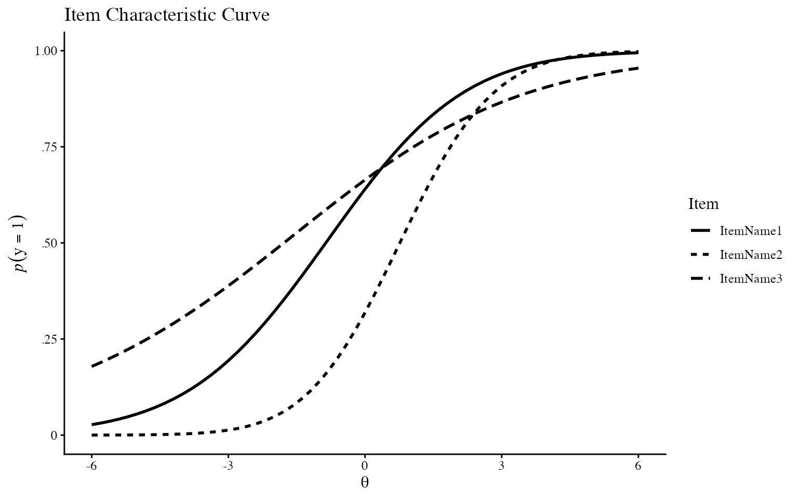
Item Information Curve
In IIC, each grey line shows the item information in one posterior draw, while the black line shows the mean across all posterior draws. IIC plots can be requested in the same way as ICC.
# panel IIC
BayesIRTplot(tma.IRT.fitted.model, IRTplot = "IIC", items_ICC_IIC = c(1, 3, 5, 6, 10, 12),
plot_option_ICC_IIC = "panel") 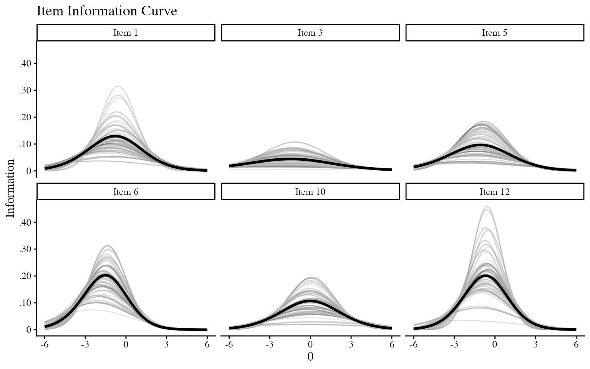
Test Characteristic Curve
In TCC, each grey line shows the expected test score in one posterior draw, while the black line shows the mean across all posterior draws.
BayesIRTplot(tma.IRT.fitted.model, IRTplot="TCC") 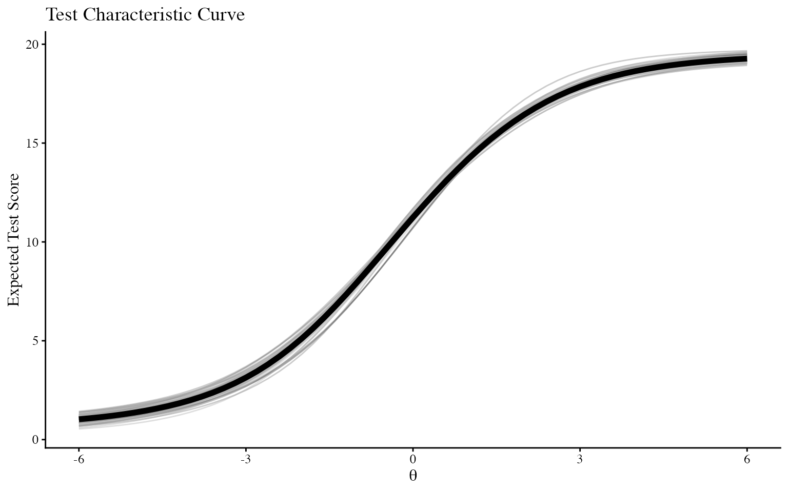
Test Information Curve
In TIC, each grey line shows the test information in one posterior draw, while the black line shows the mean across all posterior draws.
BayesIRTplot(tma.IRT.fitted.model, IRTplot="TIC")
Marginal Reliability Plot
Marginal reliability plot is a histogram of marginal reliability in
each posterior draw. The mean marginal reliability based on all
posterior draws is indicated by the dashed vertical line and can be
printed using BayesIRTdata().
BayesIRTplot(tma.IRT.fitted.model, IRTplot="REL") 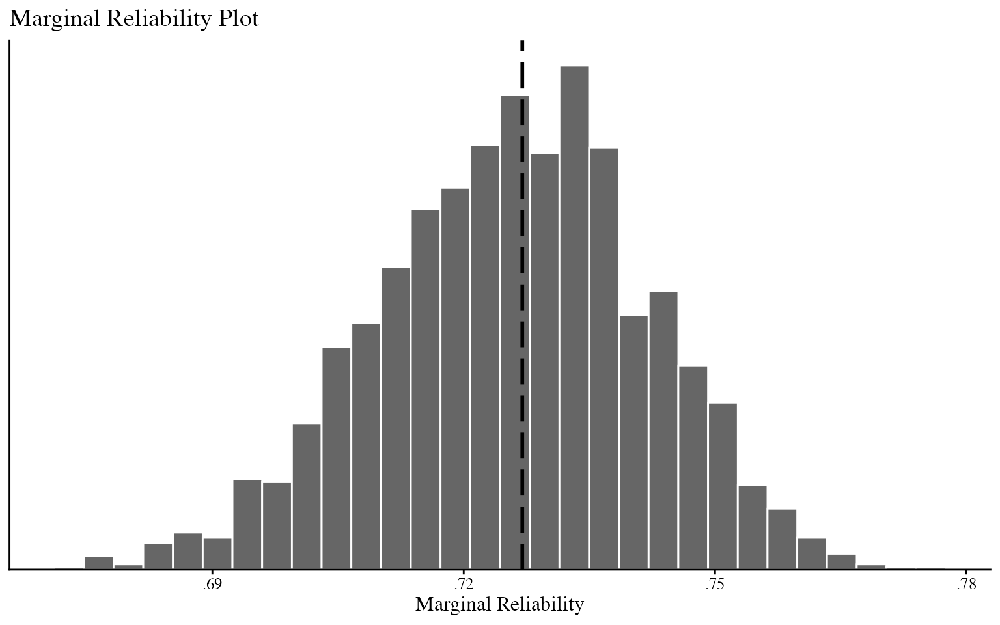
# mean marginal reliability based on all posterior draws
data <- BayesIRTdata(tma.IRT.fitted.model)
data$mean_reliability
#> [1] 0.7269934Other plotting features
Number of posterior draws plotted
For ICC, IIC, TCC and TIC, by default, the first 50 posterior draws
will be plotted as separate lines. The number of posterior draws plotted
can be changed. Note that the mean probability and mean information are
calculated using all posterior draws from blavaan fitted
object, regardless of how many posterior draws are plotted as separate
lines.
# plot the first 1000 posterior draws
BayesIRTplot(tma.IRT.fitted.model, IRTplot = "TIC", DrawsK = 1000) 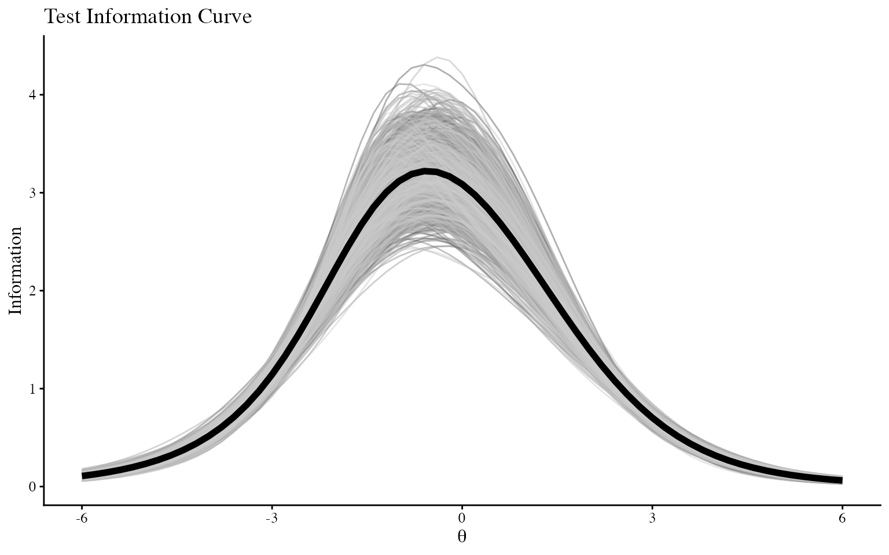
Create multiple types of plots
Multiple types of plots can be requested at the same time. By default, all types of plots are generated, the code below demonstrates how to specify selected types of plots.
# request ICC in a panel and TIC
BayesIRTplot(tma.IRT.fitted.model, IRTplot = c("ICC", "TIC"), items_ICC_IIC = c(5,6,8),
plot_option_ICC_IIC = "panel")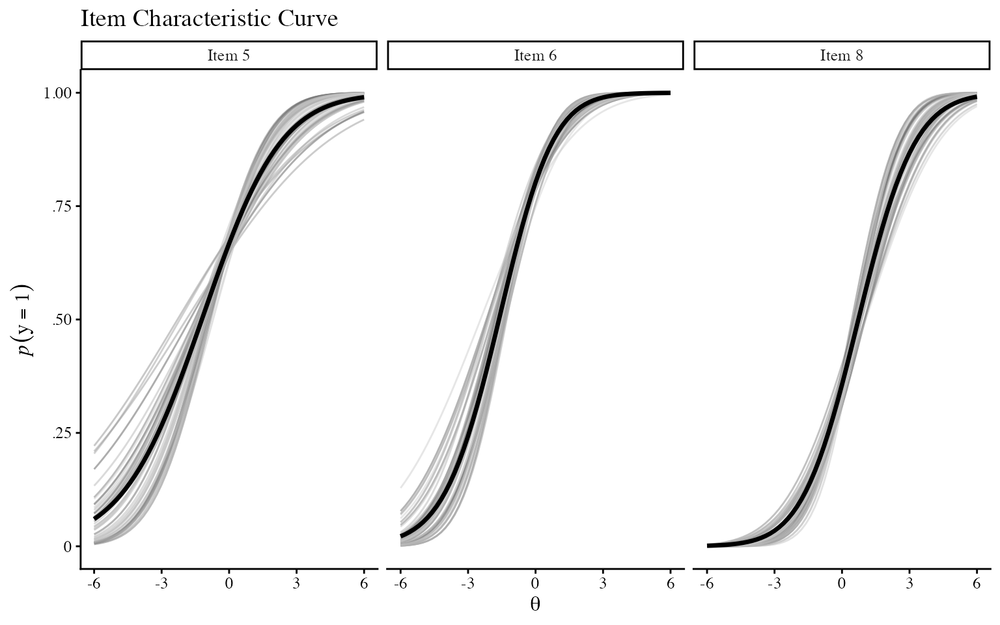
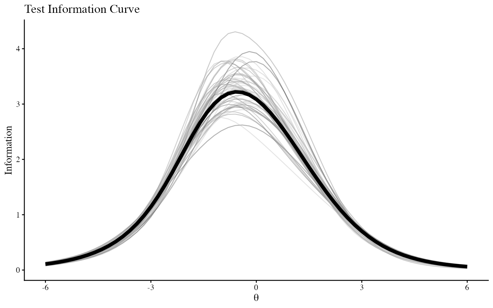
Save plots to local directory
By specifying save_plots = TRUE, each plot will be saved
as a png file. The default directory is the current working directory.
save_dir can be used to specify an absolute path or a
relative path within the working directory.
Individual plots can also be accessed from the returned list. See ?BayesIRTplot for more details.
# save plots in a subdirectory
BayesIRTplot(tma.IRT.fitted.model,
save_plots = TRUE, save_dir = "Plots")
# suppress printing all plots
plots <- BayesIRTplot(tma.IRT.fitted.model, print_plots = FALSE)
# access IPMplot
plots$IPMplotAccess datasets used for plotting
BayesIRTdata() can be used to return a list of datasets
used in plotting. See ?BayesIRTdata for more details.
datasets <- BayesIRTdata(tma.IRT.fitted.model)
# access dataset 'summary_by_item'
datasets$summary_by_itemData source, data preparation and model fitting
The example fitted model uses the publicly available dataset “tma” from Item Response Warehouse, which can be accessed and downloaded from https://itemresponsewarehouse.org/data.html
In this example, a Bayesian unidimensional two-parameter item
response theory (IRT) model was fit in Stan via the R package
blavaan in R (Merkle et al., 2021; R Core Team, 2026). Two
chains were run for the Markov chain Monte Carlo (MCMC) algorithm, the
first 500 iterations were specified as warm-up for each chain, and then
1,000 iterations from each chain after warm-up were obtained and saved.
Default thinning by 1 was included in the model to keep every iteration.
For model specification, the factor loadings on the latent factor were
freely estimated, with one threshold for each item. Below is the code
for data preparation and model fitting using blavaan.
# read in data
# replace with the path in your local directory
df <- read.csv("path/to/tma.csv")
# convert long format into wide format to fit the IRT model
# where each row contains responses for one person
df_wide <- df %>%
pivot_wider(
names_from = item,
values_from = resp
)
# for the purpose of this example, we use a random sample of 500 people
set.seed(123)
df_demo <- df_wide[sample(1:nrow(df_wide), 500), ]
# for the purpose of this example, we use the first 20 items
# create item list: Q1-Q20
items <- paste0("Q", 1:20)
# define the IRT model
blavaan.model <- paste0(
'# discrimination parameters:
F1 =~ ',
paste(items, collapse = " + "), "\n",
'# threshold parameters: ', "\n",
paste0(items, " | t1", collapse = "\n")
)
# specify features of MCMC
n.chains = 2 # number of chains
n.burnin = 500 # number of burnin
n.sample = 1000 # number of samples after burnin (per chain)
# fit the model in blavaan
# the default priors will be used
tma.IRT.fitted.model <- blavaan(
blavaan.model,
n.chains = n.chains,
burnin = n.burnin,
sample = n.sample,
bcontrol = list(cores = n.chains),
data = df_demo,
ordered = items,
std.lv = TRUE
)Citation
If you use BayesIRTplot in your work, please cite the
package by using
citation("BayesIRTplot")References
Taylor, J. A. (1953). A personality scale of manifest anxiety. The Journal of Abnormal and Social Psychology, 48(2), 285-290. https://doi.org/10.1037/h0056264
Datapages. (2026). Item Response Warehouse (Version 43.0), tma [Table]. Redivis (DOI:10.71778/V2DW-7A53). https://stanford.redivis.com/datasets/as2e-cv7jb41fd/tables/hd62-026kwagr9?v=43.0
Merkle, E. C., FitzSimmons, E., Uanhoro, J., & Goodrich, B. (2021). Efficient Bayesian Structural Equation Modeling in Stan. Journal of Statistical Software, 100(6), 1–22. https://doi.org/10.18637/jss.v100.i06
R Core Team (2026). R: A Language and Environment for Statistical Computing. R Foundation for Statistical Computing, Vienna, Austria. doi:10.32614/R.manuals https://doi.org/10.32614/R.manuals. https://www.R-project.org/.
Session information
sessionInfo()
#> R version 4.6.0 (2026-04-24)
#> Platform: aarch64-apple-darwin23
#> Running under: macOS Tahoe 26.6.2
#>
#> Matrix products: default
#> BLAS: /Library/Frameworks/R.framework/Versions/4.6/Resources/lib/libRblas.0.dylib
#> LAPACK: /Library/Frameworks/R.framework/Versions/4.6/Resources/lib/libRlapack.dylib; LAPACK version 3.12.1
#>
#> locale:
#> [1] en_US.UTF-8/en_US.UTF-8/en_US.UTF-8/C/en_US.UTF-8/en_US.UTF-8
#>
#> time zone: America/Phoenix
#> tzcode source: internal
#>
#> attached base packages:
#> [1] stats graphics grDevices utils datasets methods base
#>
#> other attached packages:
#> [1] BayesIRTplot_0.1.0
#>
#> loaded via a namespace (and not attached):
#> [1] gtable_0.3.6 xfun_0.61 bslib_0.12.0
#> [4] ggplot2_4.0.3 QuickJSR_1.11.0 htmlwidgets_1.6.4
#> [7] inline_0.3.21 CompQuadForm_1.4.4 lattice_0.23-1
#> [10] quadprog_1.5-8 vctrs_0.7.3 tools_4.6.0
#> [13] generics_0.1.4 stats4_4.6.0 parallel_4.6.0
#> [16] sandwich_3.1-3 tibble_3.3.1 pkgconfig_2.0.3
#> [19] Matrix_1.7-6 RColorBrewer_1.1-3 S7_0.2.2
#> [22] desc_1.4.3 RcppParallel_6.2.1 tmvnsim_1.0-2
#> [25] lifecycle_1.0.5 compiler_4.6.0 farver_2.1.2
#> [28] textshaping_1.0.5 mnormt_2.1.2 codetools_0.2-20
#> [31] htmltools_0.5.9 sass_0.4.10 bayesplot_1.16.0
#> [34] yaml_2.3.12 tidyr_1.3.2 pillar_1.11.1
#> [37] pkgdown_2.2.0 jquerylib_0.1.4 MCMCvis_0.16.5
#> [40] cachem_1.1.0 StanHeaders_2.39.1 parallelly_1.48.0
#> [43] lavaan_0.7-2 rstan_2.32.7 tidyselect_1.2.1
#> [46] digest_0.6.39 mvtnorm_1.4-2 future_1.76.0
#> [49] purrr_1.2.2 listenv_1.1.0 nonnest2_0.5-9
#> [52] dplyr_1.2.1 labeling_0.4.3 fastmap_1.2.0
#> [55] grid_4.6.0 cli_3.6.6 magrittr_2.0.5
#> [58] loo_2.10.1 pkgbuild_1.4.8 future.apply_1.20.2
#> [61] pbivnorm_0.6.0 withr_3.0.3 scales_1.4.0
#> [64] rmarkdown_2.32 matrixStats_1.5.0 globals_0.20.0
#> [67] igraph_2.3.3 otel_0.2.0 gridExtra_2.3.1
#> [70] ragg_1.5.2 zoo_1.9-0 coda_0.19-4.1
#> [73] evaluate_1.0.5 knitr_1.52 rstantools_2.7.1
#> [76] rlang_1.3.0 Rcpp_1.1.2 glue_1.8.1
#> [79] blavaan_0.6-1 rstudioapi_0.19.0 jsonlite_2.0.0
#> [82] R6_2.6.1 systemfonts_1.3.2 fs_2.1.0